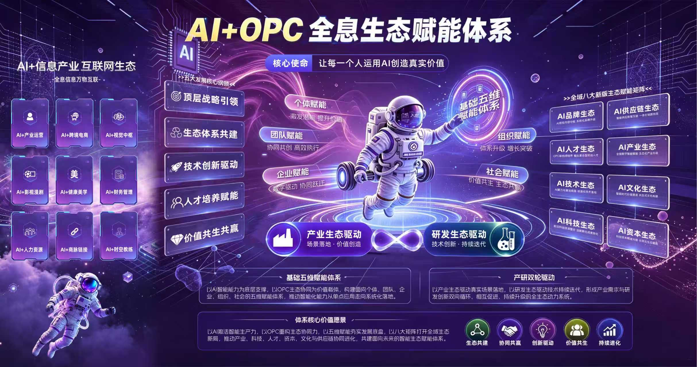

个体赋能
生态最小细胞以AI工具矩阵和标准化智能应用模型，帮助OPC超级个体实现一人成军。
策划 · 创作 · 运营 · 营销 · 跨境 · 孵化 · 风控
AI+OPC全息生态赋能体系，以AI技术应用为基础、以OPC超级个体培育为核心，以五维赋能与八大生态矩阵为支撑，让AI重塑生产力、OPC激活新生态。
以AI技术应用为基础，以OPC超级个体培育为核心，推动AI应用从工具化走向生态化。

顶层运营组织、生态搭建主体与全链路赋能平台，构建“技术 + 人才 + 生态”三位一体的发展模式。
围绕真实市场、企业转型、人才成长与产业升级需求，让AI能力进入具体商业场景。
围绕AI工具、系统模型、智能体工程、多模态内容与数字化系统，持续开展应用研究与场景验证。
由个体出发，逐级延展至社会，让AI能力在不同层级形成可持续的赋能闭环。
以AI工具矩阵和标准化智能应用模型，帮助OPC超级个体实现一人成军。
通过AI工具、智能流程、岗位重组与人机协同，重塑轻量化智能团队。
推动流程自动化、运营轻量化、内容智能化与管理数据化，激活企业增长动能。
以统一AI应用标准、OPC人才体系与商业方法论，构建开放协同的组织生态。
围绕人才培养、产业转型、就业创业与数字普惠，推动AI能力服务社会发展。
八大矩阵不是八个并列业务，而是同一套AI能力在不同场景的出口，推动AI应用从单点工具走向完整生态。
八大矩阵协同落地，把单点能力连成一张可持续的网络。
以AI内容与视觉能力重建品牌声量。从视觉识别、内容生产到全网分发，让品牌表达从经验驱动转为系统驱动。
以OPC架构师培养为核心的人才供给体系。课程训练、项目实战与陪跑辅导结合，培养可承接业务的复合型实战人才。
支撑全生态运转的应用系统与智能工具库。提供工具应用、流程搭建与系统协同，把AI使用门槛降到人人可上手。
面向前沿的大模型与智能体工程研究。持续做应用研究与场景验证，把新模型快速转化为可落地的系统与产品。
以数智互联打通从生产到交付的一体化链路。提供选品、履约、物流与供应链协同支持，让个体也能用上产业级供应链。
围绕真实商业场景推进产业智能化。以AI跨境电商、AI漫剧出海、视觉中枢、财税法务、健康美学等赛道为载体。
凝聚生态共识的价值体系与内容土壤。通过沙龙、课程与方法论沉淀，形成统一的话语体系与协作习惯。
为生态内项目提供资金与资源对接。以项目孵化、融资辅导与产业资本协同，加速优质项目跑通商业模型。
八个AI+项目覆盖出海、内容、财税、健康与资本，围绕产业需求建设可落地、可复制、可持续的项目组合。
首创OPC一人公司出海。主营TikTok美区、TEMU美区半托管Y1+Y2，从开店、选品到投流全流程带教，选品运营物流全链路AI化。
把AI内容产能对接海外短剧与漫剧市场。承接订单、分包创作、育才分成，不依赖国内流量，也不需要重资产。
人出海、货出海、厂出海。中东为主阵地：零关税、100%外资控股、5–7天注册；已服务企业3,000+、覆盖15+国家地区。
一句话30秒批量出10个爆款图。5+平台、多尺寸多语种一键生成，成本降低80%+，产能提升10倍+。
面向1.43亿户小微企业的刚需。内置最新税务政策，申报100%合规零差错，把传统3–5天的月度财务压缩至10分钟内。
雅汇美AI口腔健康美学。AI口扫快速面诊检测分析，等离子激活牙齿焕白提升5–8个色阶，HP浓度≤3%，不损伤牙釉质。
产教一体，孵化AI人才。与OPC架构师培养体系一体两面，是生态里权重最重的一块。
平台 + 专业咨询服务，全国领先的商业引荐网络，把需求连上。
第三方金融服务，覆盖对公债权、股权融资与供应链金融，把资金接上。以上为服务能力说明，不构成任何收益承诺。
厦门、漳州、福州三地园区联动，打通政府牵头、国企统筹、市场化运营的协同路径，把福建样板复制到更广的区域。
与园区联合共建厦门AI+OPC促进发展中心。航天园二期AI产业园运维共建、三期筹备；挂牌OPC生态共建基地；八号空间站作为AI+OPC主办公与成果展示场。面向社会做AI人才实训与就业岗位输送，面向市场做企业AI转型陪跑。
与国企信产集团共建的四位一体孵化平台：孵化中心 + AIGC平台 + 人才基地 + 供应链。获授牌数字经济示范单位、AI+OPC创业基地，首创OPC一人公司体系，面向中小卖家提供零经验出海全程陪跑。
位于台江区榕金大厦，提供AI工具、培训陪跑、供应链与政策申报。打通厦门—漳州—福州三地，闽南闽东双核联动，进一步升级现代服务业产业园。
整个生态里最难被复制的一环，也是最能向外释放价值的一环。以AI降本增效为核心，帮助合作企业降低运营成本30%–70%，并把能力沉淀为区域产业升级与人才培养的长期增量。
协同推进区域AI产业政策落地，助力产业AI数字化转型。
合作探索AI技术在传统产业的规模化应用，赋能国企产业市场化升级。
共建人才培养体系，输送AI+专业人才。
链接创业者与企业负责人，提供技术与资源支持；以AI降本增效为核心，降低运营成本30%–70%。
带动就业、创业增长，激活区域经济活力。
整合技术、供应链与文化资源，推动多行业融合。
以AI激活智能生产力，以OPC重构生态协同，以五维赋能夯实发展底盘，以八大矩阵打开全域生态新局。
博斯企培人工智能研究院打造了一套覆盖AI全领域的职业技能培养体系，帮助学员从AI入门到精通，逐步成长为AI领域的专业人才。我们坚持"学以致用"的培训理念，所有课程均配备实战项目，确保学员在真实场景中掌握AI工具与技能。六大AI核心认证方向，满足不同行业和岗位的AI技能需求。
系统化的AI知识体系学习与认证，涵盖AI基础理论、机器学习、深度学习等核心内容。
面向实际业务场景的AI应用能力培养，掌握AI工具在实际工作中的高效应用方法。
掌握AI Agent开发的核心技术，打造属于自己的AI数字员工与自动化工作流。
利用AI工具进行内容创作、短视频制作、社交媒体运营，掌握AI时代的流量密码。
AI赋能跨境电商全链路运营，从选品、定价、营销到客服，全面提升运营效率。
培养能够独立授课的AI专业讲师，掌握AI教学方法论与课程设计能力。
博斯企培人工智能研究院提供从项目选择到商业落地的全流程孵化服务。配备专属导师一对一辅导，提供可复用的实战模板，帮助创业者快速验证商业模式并实现盈利。我们已成功孵化100+AI项目案例，覆盖跨境电商、AI视觉、漫剧视频、财税法律等多个领域。
结合个人优势与市场需求，精准定位AI项目方向。
行业资深导师一对一，从技术方案到运营策略全方位指导。
可复用实战模板，真实商业场景实操训练。
建立可持续盈利模型与增长策略，确保长期可行性。
利用AI技术赋能跨境电商全链路，从选品、定价、营销到客服。
AI图像生成、视频制作、品牌视觉设计等创意内容生产。
AI驱动的漫画创作与短剧制作，打造内容创业新模式。
AI赋能财税合规、法律咨询等传统专业服务，提升服务效率。
为企业定制开发专属AI应用与数字员工体系，帮助企业实现自动化运营与降本增效。AI Agent作为数字员工，24小时自动执行业务流程，让AI成为企业增长的新生产力。覆盖智能客服、私域运营、数据分析、内容创作、社媒管理、办公自动化等多个场景。
7×24小时自动回复客户咨询，智能引导加微、收集信息、生成日报。
自动跟进潜在客户，智能推荐产品方案，提升转化率与成交效率。
自动处理文档、报表、邮件等日常办公任务，释放人力资源价值。
自动化营销投放、数据分析、用户画像，提升运营效率与决策精准度。
构建企业专属AI知识库，智能检索与问答，降低内部沟通成本。
自动化课程推荐、学习进度跟踪、智能考核与个性化学习路径规划。
博斯企培人工智能研究院已累计服务3000+企业，涵盖制造、零售、教育、电商、跨境电商等多个行业。我们提供从AI诊断到落地实施的全链路企业赋能服务。通过AIOPC模式，帮助企业构建AI数字员工体系，实现降本增效，释放人力资源价值。
深入企业业务场景，诊断AI应用潜力，制定个性化AI转型路线图，明确优先级与实施路径。
针对企业不同岗位定制AI培训方案，提升团队AI素养与工具使用能力，打造企业内部AI人才梯队。
为企业定制开发专属AI智能体（AI Agent），替代重复性工作，实现业务流程自动化。
AI系统上线后的持续优化与迭代服务，确保AI应用持续产生价值。
漳州AI+OPC促进发展中心——全省首个聚焦AI与"一人公司"融合的创新载体，由龙文区政府发起、博斯企培人工智能研究院联合运营。中心构建教育、技术、人才、资本、平台五位一体赋能体系，推行"周有培训、月有活动、季有路演、年有赛事"的常态化运营体系，形成产业发展与人才发展的双向驱动模式。
打造区域AI产业园，集聚AI企业与人才，形成产业集群效应。
建设区域AI人才培养基地，持续输送高质量AI实战人才。
为AI创业者提供全链条孵化服务，降低创业门槛与风险。
引入优质AI企业与项目，打造区域AI产业发展高地。
全国创新型AI创业载体，帮助个人实现一人创业、AI数字员工、轻资产运营
一个人借助AI工具，即可开展完整的创业项目。
AI赋能的个人公司，轻资产、高效率运营模式。
AI Agent作为数字员工，24小时自动执行业务流程。